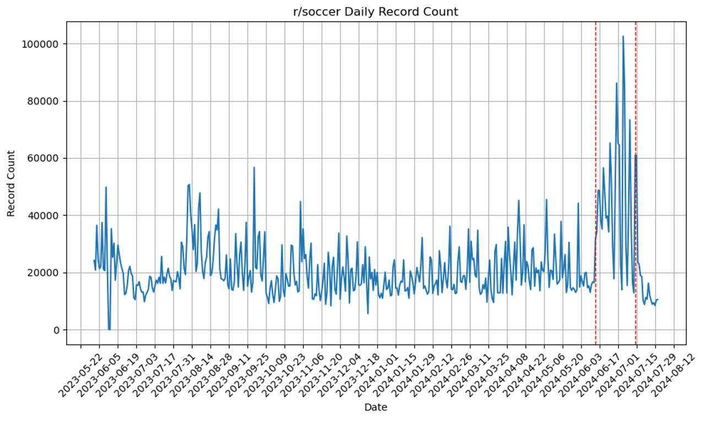

Summary
1 Discussion
1.1 Project Plans
- Feedback:
- Clarify the project scope and explicitly state how fan sentiment aligns with team performance.
- Ensure that the analysis considers the timing of matches and external factors that might influence fan sentiment.
- Incorporate more subreddits for a larger variety of data.
- Clarify the project scope and explicitly state how fan sentiment aligns with team performance.
- Incorporation:
- Expanded the project introduction to define the scope clearly, included timing considerations in the analysis plan, and added more subreddits.
1.2 EDA Work
- Feedback:
- Provide descriptive statistics for Reddit sentiment distributions and match outcomes.
- Visualize relationships between fan activity levels and match phases (pre-match, during, post-match).
- Provide descriptive statistics for Reddit sentiment distributions and match outcomes.
- Incorporation:
- Added visuals showing the distribution of sentiments and their alignment with match timelines.
1.3 NLP Work
- Feedback:
- Examine how match context influences sentiment (e.g., when a team is losing but makes a comeback).
- Address limitations in identifying fan communities without user flair.
- Examine how match context influences sentiment (e.g., when a team is losing but makes a comeback).
- Incorporation:
- Added a discussion on how to adjust sentiment analysis to consider in-match events.
- Acknowledged flair-related limitations and proposed potential solutions.
- Added a discussion on how to adjust sentiment analysis to consider in-match events.
1.4 ML Work
- Feedback:
- Test whether including more contextual information (e.g., match status) improves predictive accuracy.
- Compare predictive performance with simpler baseline models.
- Test whether including more contextual information (e.g., match status) improves predictive accuracy.
- Incorporation:
- Conducted experiments incorporating match context and documented their effects on model accuracy.
- Benchmarked results against random selection to contextualize success.
- Conducted experiments incorporating match context and documented their effects on model accuracy.
1.5 Website/Results
- Feedback:
- Make visualizations more interactive for website users to explore sentiment trends across different matches.
- Summarize key findings succinctly for non-technical audiences.
- Make visualizations more interactive for website users to explore sentiment trends across different matches.
- Incorporation:
- Added interactive EDA visuals and simplified key takeaways in the results section and added user-friendly charts.
2 Conclusion
2.1 Summary
The project successfully demonstrated that Reddit fan sentiment reflects match outcomes to some extent, though not always consistently. Key findings include:
- Sentiment Analysis: Sentiment often aligns with team success but struggles in nuanced scenarios, such as when teams lose despite positive moments.
- Machine Learning: Predictive models were moderately successful but limited by data context and temporal granularity.
2.2 Key Visuals



3 Next Steps
If more time were available, the next steps would include:
- Improving Data Context: Link comments more precisely to in-match events using timestamped data.
- Expanding Dataset: Incorporate additional data sources to address self-identification bias.
- Refining Models: Explore advanced NLP and ML techniques, such as transformer-based models or sentiment analysis frameworks optimized for sports contexts.
- Engaging Fans: Develop interactive tools to visualize insights and encourage community-driven exploration of the data.
4 Closing Thoughts
This project highlights the intersection of sports and digital discourse, demonstrating how fan sentiment can provide valuable insights into the dynamics of global tournaments. With additional refinements and expanded datasets, this research has the potential to deepen understanding of how digital communities shape and reflect real-world events.